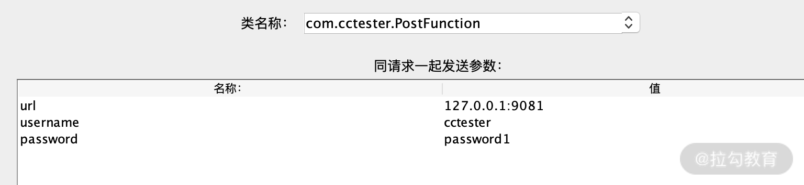
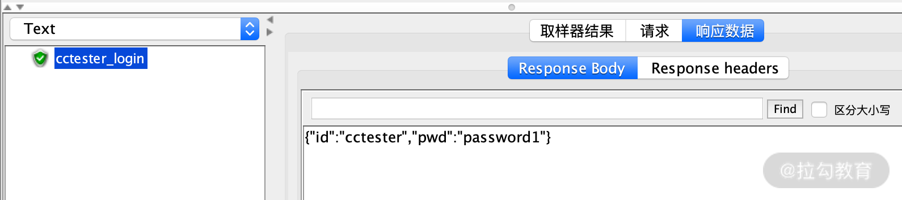
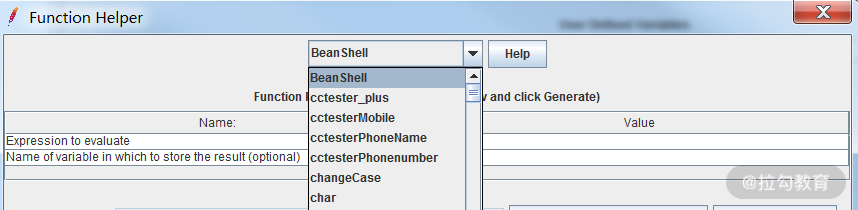

- 00 开篇词 为什么每个测试人都要学好性能测试？.md.html
- 01 JMeter 的核心概念.md.html
- 02 JMeter 参数化策略.md.html
- 03 构建并执行 JMeter 脚本的正确姿势.md.html
- 04 JMeter 二次开发其实并不难.md.html
- 05 如何基于 JMeter API 开发性能测试平台？.md.html
- 06 Nginx 在系统架构中的作用.md.html
- 07 你真的知道如何制定性能测试的目标吗？.md.html
- 08 性能测试场景的分类和意义.md.html
- 09 如何制定一份有效的性能测试方案？.md.html
- 10 命令行监控 Linux 服务器的要点.md.html
- 11 分布式服务链路监控以及报警方案.md.html
- 12 如何把可视化监控也做得酷炫？.md.html
- 13 Docker 的制作、运行以及监控.md.html
- 14 如何从 CPU 飙升定位到热点方法？.md.html
- 15 如何基于 JVM 分析内存使用对象？.md.html
- 16 如何通过 Arthas 定位代码链路问题？.md.html
- 17 如何应对 Redis 缓存穿透、击穿和雪崩？.md.html
- 18 如何才能优化 MySQL 性能？.md.html
- 19 如何根治慢 SQL？.md.html
- 20 结束语 线上全链路性能测试实践总结.md.html
04 JMeter 二次开发其实并不难
上一讲我们通过学习 JMeter 的脚本编写方式和执行方式，掌握了如何让 JMeter 更加有效地运行，其技术思路是使用 JMeter 本身或者社区提供的现成方案去实现，这基本已经满足了绝大多数性能测试的需求。
随着互联网行业发展，各种技术方案层出不穷，但是任何方案都不是万能的，有些需求是要我们自己写代码去实现的，JMeter 也留了相应的入口便于我们编写代码，所以本讲将介绍三种插件编写方式：
- 自定义 BeanShell 功能
- 自定义请求编写（Java Sampler）
- 自定义函数助手
自定义 BeanShell 功能
什么是 BeanShell
BeanShell 是由 Java 编写的，相当于一个小巧的 Java 源码解释器，简单来说就是你可以在里面写代码，然后通过 Beanshell 翻译成插件可以识别的指令去执行相关操作。
JMeter 中用 BeanShell 的优势
JMeter 也是由 Java 编写的，而 Java 运行前需要先编译，而 BeanShell 作为一款解释器直接运行源代码就可以。
BeanShell 在 JMeter 的作用
BeanShell 在 JMeter 中有着广泛的应用，包括前置处理器、后置处理器、Sampler 等，我们来看下这些主要应用是做什么的。
- 前置处理器：主要是在接口请求前做一些逻辑，生成参数化数据。
- 后置处理器：用于提取参数、参数格式设置等。
- Sampler：可以作为独立的请求，支持各类请求编写、数据生成。
BeanShell 的常见用法举例
对我来说，BeanShell 最常被用于对请求或者返回内容进行获取或者加工，其中 prev 是对当前的取样进行访问，执行了对响应状态码、响应信息、请求头等的操作，示例如下：
log.info("code is "+prev.getResponseCode());
#获取响应的状态码
log.info("response is "+prev.getResponseDataAsString());
#获取响应信息
log.info("content_type "+prev.getContentType());
#获取头文件中ContentType类型
log.info("header "+prev.getRequestHeaders());
#获取取样器请求首部字段
通过以上方式，基本实现了对请求的基本信息的获取，然后你就可以对这些信息做进一步的提取、判断等操作。可能你会问我，使用 info 级别的日志打印，JMeter 还支持 error 级别的日志打印吗？答案是支持的，示例如下：
log.error("cctester");
log.info("cctester");
你可以在 BeanShell 中自行验证下，使用 log 和 error 的方式对于 JMeter 的界面提示信息是否有区别。
JMeter 调用 BeanShell 解释器来运行脚本，同样需要注意的是不建议过度使用这个插件， 因为在 JMeter 高并发时，它将会消耗较多的本地资源，所以一般遇到逻辑相对复杂且代码量较大的情况，我们会使用 JMeter 的另一种特色功能：开发自定义插件（jar 形式），一般来说自定义的插件会帮助我们实现两方面功能：
- JMeter 本身需要自行拓展的请求或者不支持的测试协议，我们可以使用 Java 请求来完成；
- 自定义辅助函数，协助我们进行性能测试。
自定义请求编写（Java Sampler）
为了让你能够系统地学习 Java Sampler 的编写，我将分为如下四部分来介绍。
- 什么是 Maven
- 什么是 Pom
- 实现 Java Sampler 功能的两种方式
- 实例：使用 Java Sampler 重写 POST 请求
什么是 Maven
Maven 是一个项目管理工具，它可以很方便地管理项目依赖的第三方类库及其版本，说得再通俗一点：
- 没有它之前你得手动下载对应的 jar，并且复制到项目里面，升级的话又得重新下载；
- 有了 Maven 之后你只需要填写依赖的包名词及其版本号，就能自动帮你下载对应的版本然后自动进行构建，如果说 Maven 只是名字或者代号，那么灵魂就是 Pom 了。
什么是 Pom
在 Maven 里，project 可以没有代码，但是必须包含 pom.xml 文件。pom 文件是 Maven 对应的配置文件，我们依赖的相关信息可以在 pom.xml 中进行配置，它必须包含 modelVersion、groupId、artifactId 和 version 这四个元素，下面来看下这些元素具体的作用。
- modelVersion：指定了当前 POM 模型的版本，对于 Maven 2 及 Maven 3 来说都是 4.0.0。
<modelVersion>4.0.0</modelVersion>
- groupId：组织标识、项目名称。
<groupId>com.cctester</groupId>
- artifactId：模块名称，当前项目组中唯一的 ID。
<artifactId>mavenTest</artifactId>
- version：项目当前的版本号。
<version>1.0-SNAPSHOT</version>
- packaging：打包格式，可以为 jar、war 等。
<packaging>jar<packaging>
开发之前在 pom 文件里引入相应的 jar 包，这些 jar 包会给我们提供相应的类或者接口，引入方式如下所示：
<dependency>
<groupId>org.apache.jmeter</groupId>
<artifactId>ApacheJMeter_core</artifactId>
<version>5.3</version>
</dependency>
<dependency>
<groupId>org.apache.jmeter</groupId>
<artifactId>ApacheJMeter_java</artifactId>
<version>5.3</version>
</dependency>
实现 Java Sampler 功能的两种方式
- 继承 AbstractJavaSamplerClient 抽象类；
- 实现 JavaSamplerClient 接口。
通过阅读源码可以发现 AbstractJavaSamplerClient 抽象类是 JavaSamplerClient 接口的子类，想必我们都知道实现一个接口就必须实现接口里的所有方法，然而当你不需要实现所有方法时，继承 AbstractJavaSamplerClient 抽象类也是一个不错的选择。为了学习的全面性我就以实现 JavaSamplerClient 接口的方式去讲解所涉及的四个方法。
（1）如下所示，这个方法由 JMeter 在进行添加 JavaRequest 时第一个运行，它决定了你要在 GUI 中默认显示哪些属性。当每次在 GUI 里点击建立 java requst sampler 的时候会调用该方法。该方法设置了 parameters 的初始值，也可以在 sampler 的 GUI 界面做进一步的修改。
public Arguments getDefaultParameters() {}
（2）如下所示，这个方法用于初始化测试脚本里面用到的变量，这些变量会在后续执行中使用。
public void setupTest(JavaSamplerContext context) {}
（3）如下所示，这个方法是实现功能逻辑的主方法，每个线程会循环执行这个方法。
public SampleResult runTest(JavaSamplerContext context) {}
- 计时开始的时刻是从 SampleResult 类里面的 sampleStart() 方法执行开始。
- 计时结束的时刻是 sampleEnd() 方法执行结束。
- setSuccessful() 方法用来表示测试的成功与否，通常使用 try catch 来设置结果，也可以用 if 语句。
- setResponseData() 方法用来为测试结果传递数据。
（4）如下所示，这个方法在每个线程执行完所有的测试工作之后执行，有点像 finally 的功能，比如，我开了一个数据库的连接，那么我要在所有的线程完成工作后关闭。
public void teardownTest(JavaSamplerContext context) {}
案例：使用 JavaSampler 重写 HTTP 的 POST 请求
相信你在平时工作中会经常接触到 POST 请求，接下来我将举一个有更多代入感的例子。
（1）首先我们来完成 POST 请求的核心方法，先使用 HttpClients 发送构建的 POST 数据包，然后获取到返回值，这一步是完成 POST 请求的基本步骤，示例代码如下：
//HttpClients提供功支持 HTTP 协议的客户端工具
httpClient = HttpClients.createDefault();
//新建一个HttpPost请求的对象将url，接口参数等信息传给这个对象
HttpPost httpPost = new HttpPost(URL);
//传入请求参数
httpPost.setEntity(new UrlEncodedFormEntity(Value, UTF8_CHARSET));
// 设置header信息，指定报文头Content-type等
httpPost.setHeader("Content-type", "xxxxx")；
// 执行请求操作，并拿到结果
response = httpClient.execute(httpPost);
（2）接下来实现 JavaSamplerClient 接口，这是编写 Java Sampler 插件需要实现的核心接口，涉及的方法是 getDefaultParameters() 和 runTest()，作用上文已经描述过。下面带你来看具体怎么使用的，如下代码所示：
//这是决定我们JMeter界面需要输入的内容，你可以看到有了url，username 和password信息，并且给出了默认值
public Arguments getDefaultParameters() {
Arguments arguments = new Arguments();
arguments.addArgument("url","127.0.0.1:9081");
arguments.addArgument("username", "cctester");
arguments.addArgument("password", "password");
return arguments;
}
这一步实际的效果图可以看下方的初始界面图。

初始界面图
（3）在上一步骤进行了参数的输入，接下来实现接收这些参数，并进行参数的输入、发送、返回判断等，如下代码所示：
public SampleResult runTest(JavaSamplerContext javaSamplerContext) {
//生成sampleResult对象，用于请求的命名、标记状态、添加返回内容等
SampleResult sampleResult=new SampleResult();
sampleResult.setSampleLabel("cctester_login");
//调用上文中实现的post请求
PostTest postTest=new PostTest();
//接受JMeter界面上传输的参数
String username = javaSamplerContext.getParameter("username");
String password = javaSamplerContext.getParameter("password");
String url = javaSamplerContext.getParameter("url");
//标记请求开始
sampleResult.sampleStart();
try {
HttpResponse result =postTest.Request(url,username,password);
String entity= EntityUtils.toString(result.getEntity());
//根据返回内容判断结果状态并展示结果
if (result.getStatusLine().getStatusCode()==200){
sampleResult.setSuccessful(true);
sampleResult.setResponseCodeOK();
sampleResult.setResponseData(entity, "utf-8");
}else {
sampleResult.setSuccessful(false);
sampleResult.setResponseData(entity, "utf-8");
）
（4）完成后打成 jar 包放到 /lib/ext 下重启 JMeter 即可，实际的效果图你可以参考上方的初始界面图和下方的运行图。

运行图
自定义函数助手
通过 Java Sampler 插件开发的学习，我们知道 JMeter 相关插件的开发其实都是有一定的套路可循，那 JMeter 函数助手开发也不例外，接下来进行函数助手开发流程的了解。
（1）引入 Maven 包，这个包会给我们提供函数助手开发相关的类，如下代码所示：
<dependency>
<groupId>org.apache.jmeter</groupId>
<artifactId>ApacheJMeter_functions</artifactId>
<version>5.3</version>
</dependency>
（2）接下来新建我们的类包，此时新建的包需要特别注意，名字只能是 functions 结尾，否则打包放到 JMeter 中是没有办法识别这个插件的，然后代码中继承 AbstractFunction 类就可以实现，一起看下需要实现哪些方法。
public String getReferenceKey() {}
这一方法表示函数助手对话框中的下拉框中显示的函数名称，如下图所示：

public List<String> getArgumentDesc() {}
这一方法是设置入参的描述语，用于函数助手对话框中，显示函数名称提示。
public void setParameters(Collection<CompoundVariable> collection) {}
这一方法用于我们的参数值传入。
public String execute(SampleResult sampleResult, Sampler sampler){}
这一方法是根据入参，执行核心逻辑，保存结果至相应的变量中。
总结
通过本讲的学习，你知道了如何使用代码方式实现自己需要的插件，beanshell 和 jar 包引入都是工作中常见的，相信这部分知识会对你的工作产生比较大的帮助，这也是 JMeter 的特色功能，不仅落地性强而且社区资料完善。
这里给你留个小作业：相信经过上文的讲解以及实例，你比较清楚地知道了插件开发的核心流程，你可以根据自己工作中的自定义函数助手的需求，按照上面的代码结构自行完成。在实践过程中遇到任何问题，欢迎在留言区留言。